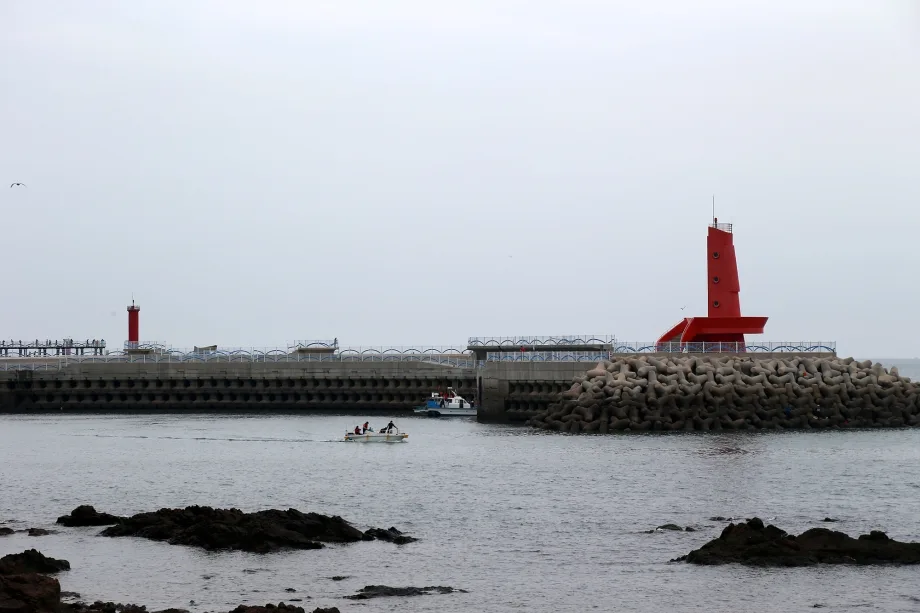
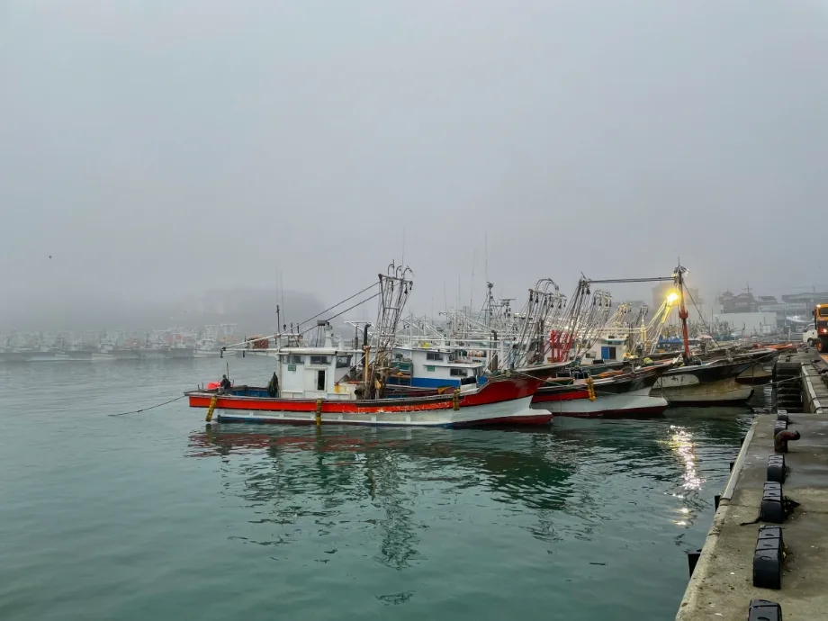
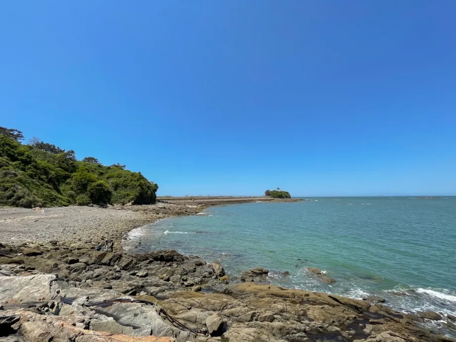

▲ 충남 서천 홍원항. 전어·꽃게 축제가 열리는 항구로, 서해 어선이 빼곡히 들어선다
서해안 가을 축제를 하나로 묶어 생각하면 일정이 어긋납니다. 전어와 대하는 제철이 다르고, 그래서 축제 기간도 다릅니다.
얼마나 다르냐면 네 배입니다. 서천 홍원항의 전어·꽃게 축제는 16일, 홍성 남당항의 대하축제는 66일입니다.
1. 전어는 곧 끝납니다
이 기사를 읽는 시점이 중요합니다. 서천 홍원항에서 열리는 제24회 서천 홍원항 자연산 전어·꽃게 축제는 8월 22일 시작해 9월 6일에 끝납니다.
16일짜리 축제이고, 이미 절반이 지났습니다. 장소는 충남 서천군 홍원길 88 홍원항 일원입니다. 전어회와 전어구이, 전어무침부터 꽃게찜과 꽃게탕까지 제철 수산물을 다루며 축제장 입장료는 없습니다.
| 구분 | 내용 |
|---|---|
| 기간 | 8월 22일 ~ 9월 6일(16일) |
| 장소 | 서천군 홍원길 88 홍원항 일원 |
| 입장료 | 무료 |
| 체험 | 맨손 전어 잡기 — 1인 1만 5000원 |
| 부대 | 홍원항 수산물 장터, 보물찾기, 포토존, 민속놀이 |
| 문의 | 홍원항마을축제추진위원회 041-950-4414 |

▲ 충남 서천 홍원항의 붉은 등대. 방파제 끝에서 서해를 마주 본다 ⓒ 서천군
📍 전어 축제가 짧은 이유
전어는 가을 초입에 기름이 오르는 어종입니다. 살이 오르는 구간이 짧고, 그 시기를 지나면 상품성이 급격히 떨어집니다.
축제 기간이 짧은 것은 운영의 문제가 아니라 어종의 시간표 때문입니다. 9월 초를 넘기면 축제의 명분 자체가 약해집니다.

▲ 충남 서천 홍원항의 좌판. 갓 들어온 어획물을 산지 가격으로 살 수 있다 ⓒ 서천군
2. 대하는 두 달 넘게 이어집니다
반대편 사정은 완전히 다릅니다. 홍성 남당항의 제31회 홍성남당항 대하축제는 9월 4일 금요일에 시작해 11월 8일 일요일까지 이어집니다. 66일입니다.
행사 구조도 다릅니다. 66일 내내 같은 강도로 운영되는 것이 아니라 개막행사와 축하공연이 따로 잡혀 있습니다.
| 구분 | 기간 |
|---|---|
| 축제 기간 | 2026. 9. 4(금) ~ 11. 8(일) |
| 개막행사 | 9. 4(금) ~ 9. 6(일) |
| 축하공연 | 9. 25(금) ~ 9. 26(토) |
| 장소 | 홍성군 남당항 특설무대 |

▲ 충남 홍성 남당항. 천수만을 낀 항구로 대하와 새조개가 대표 어종이다 ⓒ 홍성군
3. 축하공연이 추석 연휴에 걸립니다
여기서 눈여겨볼 날짜가 나옵니다. 대하축제 축하공연이 잡힌 9월 25일과 26일은 2026년 추석 당일과 그다음 날입니다.
올해 추석 연휴는 9월 24일 목요일부터 26일 토요일까지입니다. 축하공연이 연휴 한복판에 놓인 셈입니다.
| 날짜 | 요일 | 추석 | 남당항 |
|---|---|---|---|
| 9월 24일 | 목 | 연휴 첫날 | 축제 기간 중 |
| 9월 25일 | 금 | 추석 당일 | 축하공연 |
| 9월 26일 | 토 | 연휴 마지막 날 | 축하공연 |
| 9월 27일 | 일 | 주말 | 축제 기간 중 |
이 배치는 양날입니다. 연휴에 갈 곳을 찾는 사람에게는 목적지가 하나 생기는 것이고, 조용히 대하만 먹으려던 사람에게는 가장 붐비는 이틀이 됩니다.
4. 두 축제가 겹치는 구간은 사흘
두 축제를 한 번에 묶으려면 날짜가 좁습니다. 전어·꽃게 축제는 9월 6일에 끝나고, 대하축제는 9월 4일에 시작합니다.
| 날짜 | 서천 홍원항 | 홍성 남당항 |
|---|---|---|
| ~ 9월 3일 | 운영 | — |
| 9월 4일~6일 | 운영 | 개막행사 |
| 9월 7일 ~ | 종료 | 운영 |
전어와 대하를 같은 주말에 보려면 9월 4일부터 6일 사이가 유일한 창입니다. 그 사흘이 지나면 서천은 축제가 끝나고, 홍성만 남습니다.

▲ 안개가 낀 홍원항. 서해안 항구는 초가을 새벽에 시야가 급격히 나빠지는 날이 있다 ⓒ 서천군
5. 차로 가는 사람이 확인할 것
축제 기간의 항구는 평소와 다른 곳이 됩니다. 주차장이 축제장으로 전환되거나 임시 주차장이 외곽에 생기는 경우가 있습니다.
📍 항구 주차에서 자주 겪는 일
어항은 원래 어선 작업 공간입니다. 축제 기간에는 이 공간이 좁아지고, 조업 차량과 방문 차량이 같은 통로를 씁니다.
가급적 이른 오전에 도착하는 편이 낫습니다. 오후에는 회차 공간이 사라져 항구 안쪽까지 들어갔다가 되돌아 나오기 어려워집니다.
남당항은 항구 외에 해양분수공원이 함께 있습니다. 주간에는 분수 물놀이, 야간에는 조명과 음악분수가 운영돼 저녁까지 머무는 동선이 만들어집니다.

▲ 충남 홍성 남당항 해양분수공원. 저녁 시간대까지 체류 동선이 이어진다 ⓒ 홍성군
6. 언제 가야 하나
결론은 목적에 따라 갈립니다.
| 목적 | 시기 | 장소 |
|---|---|---|
| 전어·꽃게 | 9월 6일 이전 | 충남 서천 홍원항 |
| 둘 다 | 9월 4일~6일 | 서천 + 홍성 |
| 대하, 연휴 활용 | 9월 24일~27일 | 충남 홍성 남당항 |
| 대하, 한산하게 | 10월 중순 이후 | 홍성 남당항 |
가장 한산한 것은 10월 이후입니다. 대하축제는 11월 8일까지 이어지므로 추석 연휴와 10월 연휴가 모두 지난 뒤에도 한 달 가까이 남습니다. 사람보다 대하를 보러 가는 것이라면 그쪽이 낫습니다.

▲ 충남 서천 홍원항 인근 해안. 썰물 때는 갯바위에서 홍합과 굴을 직접 채취할 수 있다 ⓒ 서천군
다만 축제 일정은 기상과 어황에 따라 조정될 수 있습니다. 특히 태풍이 지나가면 어획량과 행사 운영이 함께 흔들립니다. 출발 전 각 군의 공지를 확인하는 편이 안전합니다.